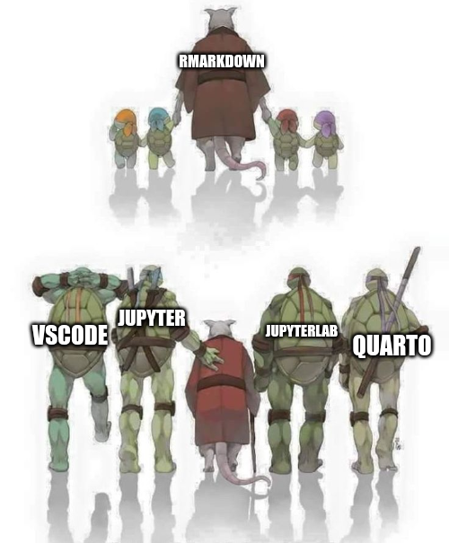

Do you remember good old rmarkdown?
---
title: "R markdown"
output: html_document
---
Hello ~world~ problems!
We have a great successor in the form of quarto that is ready for 2022 and beyond!

Good old times and what is rmarkdown
Rmarkdown format allows you mixing your code with markdown text in a git-friendly way. Usually it is used to create report-ish, latex-like documents. After preparing the report, depending on your use case, you can:
- Automatically re-generate it on regular basis
- Export to pdf/html
You can also create the beamer presentation (latex-like) from rmarkdown file!
During my studies, I quickly fall in love with rmarkdown and started using its features for almost every lab report/presentation (❤️ Metropolis beamer theme).
The alternatives where just not there.
- Latex was very powerful, but required tons of boiler plate code
- You could run
pythoninrmarkdownbut it had its own problems (at least ~5 years ago). - Working in jupyter notebooks with R was often painful…
- … even with python it was sometimes coarse, especially when you wanted to export the results to html/pdf.
Changing times
However, some time have passed and world changed!
- VS Code has a superb support for jupyter notebooks, they’re highly responsive, it’s easy to change kernels without installing them. What is important it allows you to compare notebooks using git!
- I stopped using
Rregularly. - Using
rmarkdownwithoutRwas wired. I had to open the wholeRStudio, just to generate some pdf… - This meant I stopped using
rmarkdownentirely.
Future
This summer the rmarkdown successor quarto has been released!
It has all the features I loved in rmarkdown and fixes multiple problems like a perfect support of multiple languages and being language agnostic by design.
Additionally it is nicely supported in VS Code as well.
If you ever used rmarkdown go and checkout quarto!
Most of the time it will work as a drop-in replacement that is just better.
Stay tuned for my future posts about quarto!